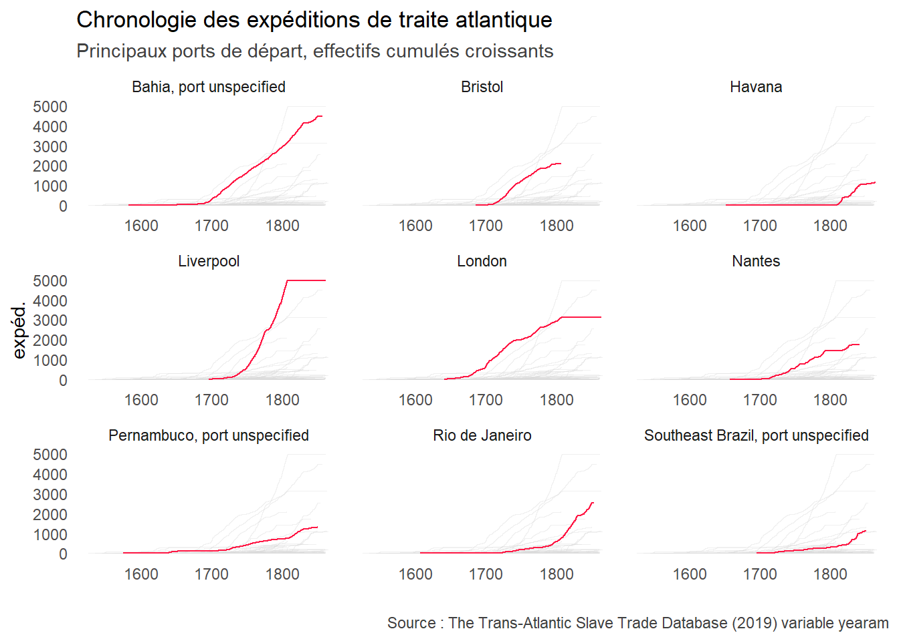

Chapter 8 Chronologie comparative des expéditions de traite
8.1 En fonction des pavillons de navires
8.1.1 Tableaux
8.1.1.1 Tableau long
## # A tibble: 1,386 x 3
## yearam natinimp n
## <dbl> <chr> <int>
## 1 1514 Portugal / Brazil 1
## 2 1516 Portugal / Brazil 1
## 3 1520 <NA> 1
## 4 1525 Portugal / Brazil 1
## 5 1526 Portugal / Brazil 1
## 6 1526 Spain / Uruguay 2
## 7 1526 <NA> 2
## 8 1527 Spain / Uruguay 1
## 9 1532 Portugal / Brazil 3
## 10 1532 Spain / Uruguay 1
## # ... with 1,376 more rows8.1.1.2 Tableau large (à double-entrées)
La fonction pivot_wider vous permet de transformer des lignes en colonnes et ainsi passer d’un format de tableau long à un format large, où les nationalités deviennent des colonnes. names_from indique la colonne contenant les noms des nouvelles variables à créer et values_from indique la colonne contenant les valeurs de ces variables.
library(tidyr)
voyages %>%
count(yearam, natinimp) %>%
pivot_wider(names_from = natinimp, values_from = n) ## # A tibble: 335 x 11
## yearam `Portugal / Bra~ `NA` `Spain / Urugua~ `Great Britain` France
## <dbl> <int> <int> <int> <int> <int>
## 1 1514 1 NA NA NA NA
## 2 1516 1 NA NA NA NA
## 3 1520 NA 1 NA NA NA
## 4 1525 1 NA NA NA NA
## 5 1526 1 2 2 NA NA
## 6 1527 NA NA 1 NA NA
## 7 1532 3 1 1 NA NA
## 8 1533 NA 1 NA NA NA
## 9 1534 2 NA NA NA NA
## 10 1535 2 NA NA NA NA
## # ... with 325 more rows, and 5 more variables: Netherlands <int>, `Denmark /
## # Baltic` <int>, USA <int>, Other <int>, Portugal <int>8.1.2 Représentations graphiques
8.1.2.1 Représentation en Base R construite à partir d’une boucle for
- Une boucle appartient à la catégorie des structures de contrôle qui permettent de contrôler le déroulement d’un programme informatique.
- La boucle for permet de répéter les mêmes instructions plusieurs fois.
- Une boucle for possède une limite fixée d’itérations définie à l’avance.
- L’en-tête de boucle :
iest une variable créée par la fonction for. Elle va prendre prend successivement chacune des valeurs unique de la variableexped_flags$natinimpà chaque itération de la boucle.
- Corps de la boucle. A chaque itération :
- On filtre l’objet
exped_flagsense basant sur la variablenatinimpdont la valeur valeur varie en fonction de i. - On stocke le tableau filtré dans un objet appelée graphique.
- on affiche le graphique de i par la fonction plot en définissant x et y et en définissant un titre basé sur i.
- On filtre l’objet
L’instruction par(mfrow=c(3, 3)) en amont de la boucle permet d’afficher les graphiques sous la forme d’une grille de 3 par 3.
# Préparation des données
exped_flags <- voyages %>%
count(yearam, natinimp) %>%
filter(complete.cases(natinimp)) %>%
filter(!natinimp =="Other")
# Affichage
par(mfrow=c(3, 3))
# Boucle
for(i in unique(exped_flags$natinimp)){
graphique <- exped_flags %>%
filter (natinimp == i)
plot(graphique$yearam,
graphique$n,
main=i,
xlab = "",
ylab = "expéditions de traite",
type ="l")
}
8.1.2.2 Représentation graphique avancée (ggplot2)
# Préparation des données
flagsyears_a <- voyages %>%
count(yearam, natinimp) %>%
filter(complete.cases(natinimp)) %>%
filter(!natinimp =="Other")
# facet
library(ggplot2)
# Création d'un graphique en bâtons
facet_flags <- ggplot (flagsyears_a, aes(x=yearam, y=n)) +
geom_step (color="#ff1744") +
scale_x_continuous(breaks=seq(1500, 1875, by=50)) +
labs(title = "Chronologie des expéditions de traite atlantique",
subtitle = "Pavillons",
caption ="Source : The Trans-Atlantic Slave Trade Database (2019) variable yearam",
x="", y="expéditions") +
theme_minimal() +
theme(plot.subtitle = element_text(colour = "grey25"),
plot.caption =element_text(colour = "grey25"))
# Création des graphiques multiples
facet_flags + facet_wrap(natinimp ~ ., ncol = 2, scales="free_x")
8.2 Chronologie comparative des expéditions de traite en fonction des ports de départs
8.2.1 Représentation graphique brute
library(ggplot2)
# Création d'un graphique en bâtons
plot_ports_depart_chrono <- ggplot(ports_depart_chrono, aes(x=yearam, y=n, group=ptdepimp)) +
geom_line()
plot_ports_depart_chrono
8.2.2 Représentation graphique partitionnée des neuf principaux ports (effectifs)
Le graphique brut est illisible. Vous pouvez envisagez un représentation graphique alternative en mettant en évidence les ports les plus actifs en combinant la fonction gghighlight (package gghighlight) et la fonction facet_wrap (package ggplot2). Lors de la préparation des données , vous devez créer deux tableaux de données et les réunir par une jointure.
- Le tableau
ports_depart_chrono_totalcompte le total des expéditions par port pour en afficher le rang (nouvelle colonnerank, fonctiondense_rank). - Le tableau
ports_depart_chrono_anneescompte le nombre d’expéditions par port et part années.
Le tableau final ports_chrono_rank combine les 2 tableaux. Il vous reste à mettre en évidence dans ggplot2 les courbes des principaux ports en se basant sur les valeurs de la colonne rank.
ports_depart_chrono_total <- voyages %>%
count(ptdepimp) %>%
mutate(rank = dense_rank(desc(n)))
ports_depart_chrono_annees <- voyages %>%
count(yearam, ptdepimp) %>%
filter(complete.cases(ptdepimp))
ports_chrono_rank <- left_join(ports_depart_chrono_annees, ports_depart_chrono_total,
by = c("ptdepimp" = "ptdepimp"))
ports_chrono_rank <- ports_chrono_rank %>%
rename(n =n.x ) %>%
select(-n.y)
library(ggplot2)
library(gghighlight)
plot_ports_depart_chrono2 <- ggplot(ports_chrono_rank, aes(x=yearam, y=n, group=ptdepimp)) +
geom_step(aes(x=yearam, y=n, group=ptdepimp) , color="#ff1744" , show.legend=FALSE, size = 0.5) +
gghighlight(max(rank) < 11, use_direct_label = FALSE,
unhighlighted_params = list(size = 0.25, colour = alpha("grey85", 0.4))) +
scale_x_continuous(breaks=seq(1500, 1875, by=100)) +
labs(title = "Chronologie des expéditions de traite atlantique",
subtitle = "Principaux ports de départ",
caption ="Source : The Trans-Atlantic Slave Trade Database (2019) variable yearam",
x = "",
y ="expéditions") +
theme(plot.subtitle = element_text(colour = "grey25"),
plot.caption =element_text(colour = "grey25")) +
theme_minimal() +
theme(plot.subtitle = element_text(colour = "grey25")) +
theme(panel.grid.major = element_blank(),
panel.grid.minor = element_blank())+
facet_wrap(~ ptdepimp, scales="free_x")
plot_ports_depart_chrono2
8.2.3 Représentation graphique partitionnée des neuf principaux ports (effectifs cumulés croissants)
ports_depart_chrono_total <- voyages %>%
count(ptdepimp) %>%
mutate(rank = dense_rank(desc(n)))
ports_depart_chrono_annees <- voyages %>%
count(yearam, ptdepimp) %>%
filter(complete.cases(ptdepimp))
ports_chrono_rank <- left_join(ports_depart_chrono_annees, ports_depart_chrono_total,
by = c("ptdepimp" = "ptdepimp"))
ports_chrono_rank_ecc <- ports_chrono_rank %>%
rename(n =n.x ) %>%
select(-n.y) %>%
group_by(ptdepimp) %>%
mutate(ecc = cumsum(n)) %>%
ungroup() %>%
arrange(ptdepimp, yearam)
library(ggplot2)
library(gghighlight)
plot_ports_depart_chrono_ecc <- ggplot(ports_chrono_rank_ecc, aes(x=yearam, y=ecc, group=ptdepimp)) +
geom_step(aes(x=yearam, y=ecc, group=ptdepimp), color="#ff1744" , show.legend=FALSE, size = 0.5) +
gghighlight(max(rank) < 11, use_direct_label = FALSE,
unhighlighted_params = list(size = 0.25, colour = alpha("grey85", 0.4))) +
scale_x_continuous(breaks=seq(1500, 1875, by=100)) +
labs(title = "Chronologie des expéditions de traite atlantique",
subtitle ="Principaux ports de départ, effectifs cumulés croissants",
caption ="Source : The Trans-Atlantic Slave Trade Database (2019) variable yearam",
x = "",
y ="expéd.") +
theme_minimal() +
theme(plot.subtitle = element_text(colour = "grey25"),
plot.caption =element_text(colour = "grey25")) +
theme(panel.grid.major = element_blank(),
panel.grid.minor = element_blank())+
facet_wrap(~ ptdepimp, scales="free_x")
plot_ports_depart_chrono_ecc
8.3 Chronologie d’arrivée des navires, principaux lieux d’achat d’esclaves
lieux_achats <- voyages %>%
select(mjbyptimp, datebuy) %>%
arrange(datebuy) %>%
filter(complete.cases(datebuy))gg_chrono2 <- ggplot(lieux_achats, aes(x= datebuy, y= mjbyptimp))
gg_chrono2 +
geom_point (color="#ff1744", alpha =0.3, size = 1.5, position = position_jitter(width = 0, height = 0.25)) +
scale_x_date(date_breaks = "10 year", date_minor_breaks = "5 year",
date_labels = "%Y") +
labs(title = "Principaux lieux d'achat d'esclaves",subtitle = "",
caption ="Source : The Trans-Atlantic Slave Trade Database (2019) variables mjbyptimp et datebuy",
x="", y="") +
theme_minimal()